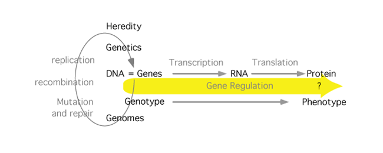

Gene Regulation

Every living thing has molecular mechanisms that open and shut the pathway from genotype to phenotype. This regulation drives embryonic development, maintains homeostasis, and lets the cell and organism respond to its environment. The basic mechanisms of gene regulation are similar in prokaryotes and eukaryotes, but the styles are different enough that, unlike transcription and translation, they should be considered separately. Eukaryotes especially build vast webs of interactions between proteins and between proteins and DNA. The individual interactions are often weak, but their number and complexity drive the program of embryonic development.
Learning resources
- Study Guide
- MBoC(6th) Ch7: Control of Gene Expression, Ch4: CHROMATIN STRUCTURE AND FUNCTION (See annotated TOC on Moodle). Cooper (3rd), posted below.
- Narration: Setting the stage
- Narration: The Lac operon
- Narration: Attenuation
- Narration: Eukaryotic gene regulation
- Narration: epigenetics
- Lac Operon: The Cell, 3rd ed [not available on this site]
- Lactose regulation of Lac Operon:This is quite helpful [not available on this site]
- A homeodomain binding to DNA: an example of a sequence specific DNA-binding protein domain [not available on this site]
- Eukaryotic gene regulation at work
10/10/21